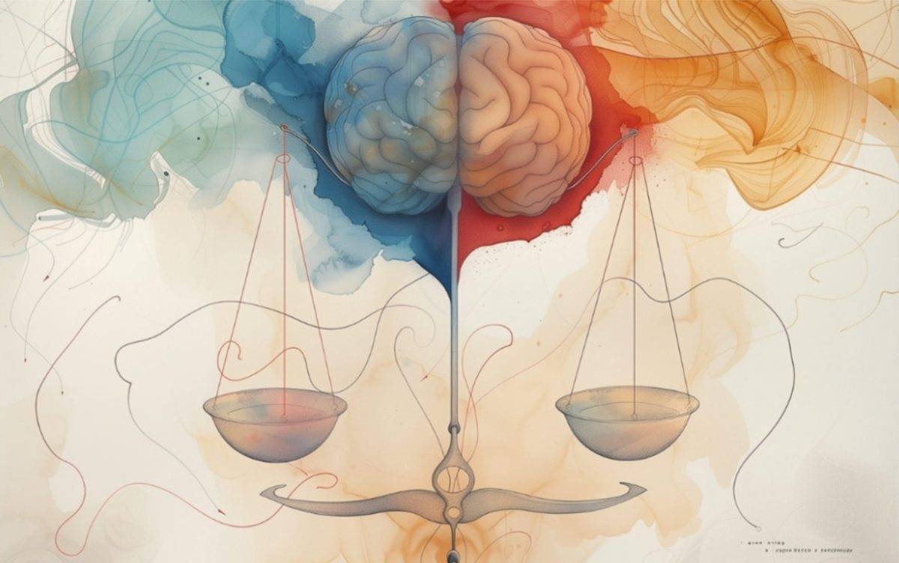

Psihologija je nauka, psihoterapija je umetnost
Psiholog, psihijatar ili psihoterapeut: kome se obratiti i po čemu se razlikuju.

Često ljudi, kada odluče da potraže pomoć, prvo naiđu na još jedno pitanje:
Kome zapravo da se obratim? Psihologu, psihijatru ili psihoterapeutu?
Čitaju, istražuju, pitaju druge… i umesto da im bude jasnije, ponekad postanu još zbunjeniji.
Psiholog, psihijatar i psihoterapeut nisu isto. Njihove uloge se prepliću, ali se razlikuju po obrazovanju, načinu rada i onome što mogu da pruže.
Psihologija je nauka, a psihoterapija je umetnost
Psihologija nam daje znanje o čoveku, o njegovim emocijama, ponašanju, razvoju, odnosima, načinu na koji razmišlja i načinu na koji se nosi sa životnim izazovima. Ona istražuje, meri, procenjuje i pokušava da razume.
Psihijatar je lekar specijalista za mentalno zdravlje. Njegov fokus je, između ostalog, na prepoznavanju i lečenju psihičkih poremećaja, a kao lekar može da proceni potrebu za farmakoterapijom i propiše lekove.
Psihoterapeut, sa druge strane, radi kroz odnos i razgovor. Psihoterapija nije samo razgovor u kome neko daje savete. To je strukturisan i stručan proces u kome zajedno istražujemo ono što se događa: emocije, misli, obrasce ponašanja, odnose, iskustva i ono što možda dugo nosimo u sebi.
I upravo tu dolazimo do nečega što se ne može pronaći samo u knjigama.
Veštine su važne. Znanje je neophodno. Ali za psihoterapiju je potreban i osećaj za čoveka.
Jer ne dolazi svaka osoba sa istom pričom, čak i kada problem na prvi pogled izgleda slično.
Dvoje ljudi može doći zbog anksioznosti, a iza nje mogu stajati potpuno različite priče. Jedna osoba možda godinama živi pod pritiskom da bude savršena. Druga je možda naučila da svoje potrebe stalno stavlja na poslednje mesto. Treća nosi iskustvo gubitka ili traume.
Zato psihoterapija nije primena jednog recepta na svakog čoveka.
Potrebno je znati prepoznati šta se nalazi iza simptoma, šta osoba može da čuje u određenom trenutku, koliko može da podnese, gde joj je potrebna podrška, a gde prostor da sama dođe do svog odgovora.
Umetnost slušanja
I možda je upravo zato psihoterapija umetnost.
- Umetnost slušanja između izgovorenih reči.
- Umetnost prepoznavanja onoga što osoba još ne ume da izgovori.
- Umetnost da znaš kada da pitaš, kada da ćutiš, kada da ponudiš drugačiju perspektivu, a kada samo da budeš tu.
Kao psiholog i psihoterapeut, posebno osećam koliko se nauka i umetnost u ovom poslu neprestano susreću.
Znanje mi daje osnovu. Teorija mi daje okvir. Istraživanja mi pomažu da razumem.
Ali čovek koji sedi preko puta mene nije teorija.
On je jedinstvena priča, sa svojim iskustvima, odnosima, strahovima, željama, odbranama, snagama i načinom na koji je naučio da preživljava ono što mu se dogodilo.
Zato verujem da dobar terapeut ne treba samo da zna šta radi, već i da ume da oseti kako to da radi baš sa tom osobom.
Psihoterapija nije popravljanje čoveka.
To je susret u kome zajedno pokušavamo da bolje razumemo ono što se događa, da pronađemo nove mogućnosti i da osoba postepeno počne da bira drugačije, iz više slobode, a manje iz straha, starih obrazaca i onoga što je nekada morala da bude.
Psihologija nam pomaže da razumemo čoveka. Psihoterapija nam omogućava da ga sretnemo. A između te dve stvari nalazi se ono najvažnije: čovek.
Sanja Grubor psiholog i psihoterapeut